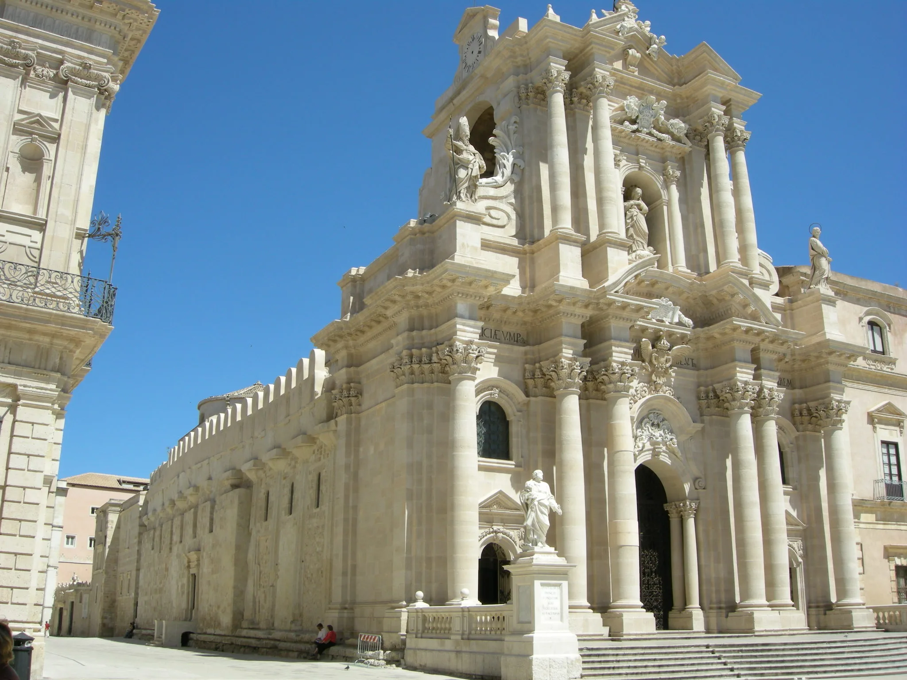
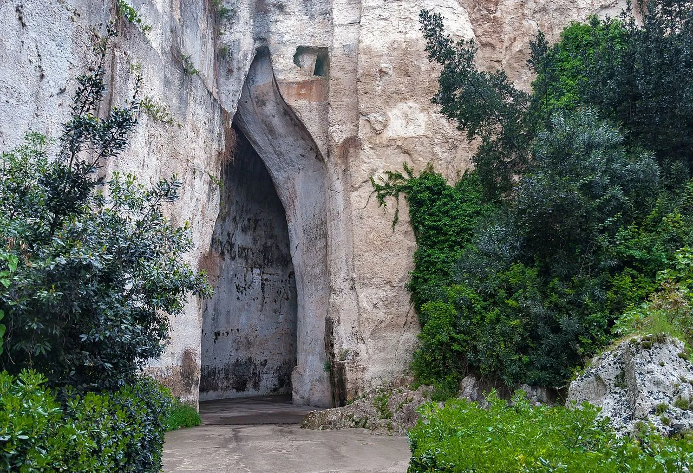
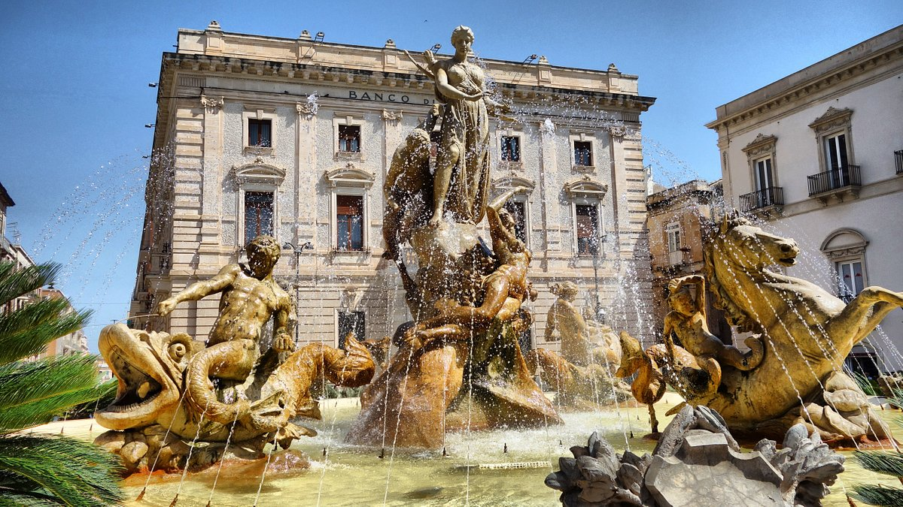
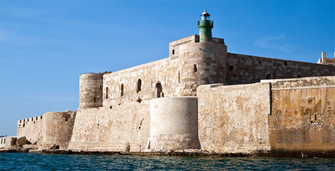

Il duomo di Siracusa, sorge sulla parte elevata dell'isola di Ortigia fu il principale tempio sacro in stile dorico , dedicato ad Atena (Minerva) e convertito in chiesa con l'avvento del cristianesimo. Considerata la chiesa piu' importante della citta' di Siracusa, e' entrata a far parte dei beni protetti dall'UNESCO in quanto patrimonio dell'umanita'. Il suo stile e' all'esterno principalmente barocco e rococo', mentre al suo interno alterna parti risalenti all'epoca siceliota, poiche' appartenenti al tempio greco e parti risalenti all'epoca medievale, costruite dai Normanni e cosi' lasciate fino ai giorni attuali. La sua struttura interna e' composta in diverse navate e cappelle, le quali hanno uno stile classico e decorato, tipico del barocco anch'esso.

Il teatro greco di Siracusa e' un teatro costruito nel V secolo a.C.,
situato all'interno del Parco archeologico della Neapolis,
sulle pendici sul lato sud del colle Temenite. Fu poi rifatto
nel III secolo a.C. e ancora ritrasformato in epoca romana.
Il teatro ospita spettacoli,concerti di musica classica e rappresentazioni
teatrali che sono rinomate in tutto il mondo.

L'Orecchio di Dionisio (o Orecchio di Dionigi) e' una grotta artificiale che si trova nell'antica cava di pietra detta latomia del Paradiso, sotto il Teatro Greco di Siracusa. Scavata nel calcare, con un andamento a S che lo rende anche un luogo di amplificazione acustica dei suoni. La ragione di questo andamento deriva dalla presenza di un antico acquedotto nella parte superiore della grotta. Da quella traccia i costruttori scavarono verso il basso creando poi la forma attuale. Proprio questa conformazione particolarmente sinuosa delle pareti lascia aperto l'interrogativo sul suo reale utilizzo. Se fosse soltanto una cava o se servisse per amplificare i suoni.
La fontana di Diana e' una fontana monumentale del 1907 , sita in Piazza Archimede a Siracusa. La fontana e' rivolta a sud e mette in evidenza la figura di Diana con arco e cane, gli attributi della dea della caccia, protettrice di Ortigia in epoca greca. Ai suoi piedi c'e' Aretusa che si allunga mentre e' in atto la trasformazione in fonte. A lato Alfeo stupefatto per cio' che sta avvenendo alla sua amata.
Il castello Maniace e' uno dei piu' importanti monumenti del periodo svevo a Siracusa. Il castello sorge su un luogo dove la tradizione narra di precedenti fortificazioni, il castello era posto a difesa del porto e della citta'.
